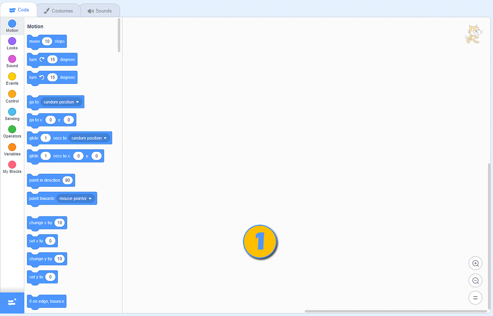

Vizualni programski jezik Scratch¶
Ukratko, vizualni programski jezik napravljen je za djecu. Programiranje Scratchu ne zahtijeva pisanje naredbi. Da biste stvorili program, dovoljno je složiti blokove (slično kao zagonetke ili kocke) pravilnim redoslijedom.
- Rezultat izvršavanja programa samo za naredbe
 izgleda ovako:
izgleda ovako:  .
.
Scratch (verziju 3.0.) možemo koristiti na dva načina:
preuzimanjem instalacijske datoteke s adrese https://scratch.mit.edu/download i instaliranjem na osobni digitalni uređaj (desktop verzija programa);
na adresi https://scratch.mit.edu (online verzija programa).
Oba načina imaju svoje prednosti i mane.
Ako instaliramo radnu verziju na svoj osobni digitalni uređaj, radit ćemo brže i ugodnije, prije svega jer nećemo ovisiti o kvaliteti naše internetske veze ili o povremenom održavanju internetske platforme Scratch (koja tada nije dostupna).
Ako programiramo putem internetske platforme Scratch, trebamo stvoriti svoj osobni račun. Imajući račun dolazi mogućnost spremanja naših projekata na mrežnoj platformi i pristupa im s bilo kojeg uređaja koji je spojen na Internet. Pored ove pogodnosti, internetska platforma Scratch nudi vam mogućnost da dijelove svojih programa držite u Ruksaku i ponovo ih koristite kada ih zatrebate. Dodatna prednost je mogućnost objavljivanja programa. Nakon objavljivanja, vaš program postaje vidljiv ostalim korisnicima Scratch-a; nazivamo ih Scratchers-ima. Baš kao što mogu vidjeti i remiksirati (prilagoditi) vaše programe (projekte), također možete vidjeti i remiksirati njihove. Na platformi možete zatražiti pomoć. Pomaganje drugim Scratchers-ima potpuno je u duhu ove internetske zajednice.
Korisničko sučelje dvije različite verzije Scratch izgleda gotovo identično; međutim, internetska inačica sadrži sve elemente instalirane verzije i neke druge funkcionalnosti. Na ovoj ćemo stranici prikazati elemente online platforme Scratch.
Scratch online platforma¶
Programi koji su stvoreni na mrežnoj platformi Scratch nazivaju se projektima. Projekti se stvaraju klikom na gumb Create (Kreirajte). Otvorit će se korisničko sučelje koje izgleda ovako:

Traka izbornika;
Kartice - Skripte (Code), Kostimi (Costumes) i Zvukovi (Sounds);
Odabir kategorija blokova koji se mogu dodati radnoj površini;
Prostor na kojem možemo kreirati naše programe (slažemo blokove) koji se odnose na aktivne likove ili pozornicu;
Backpack (Ruksak);
Popis likova s osnovnim parametrima (karakteristikama) - aktivni lik označen je plavim okvirom oko njegove sličice;
Popis pozadina (pozornica);
Pozornica.
- Zaglavlje sučelja zauzima traka izbornika.

Klikom na Scratch otvorit će se stranica računa korisnika koji je trenutno prijavljen (u našem slučaju to bi bila stranica Petlji računa). Na ovoj stranici možete vidjeti relevantne obavijesti, vijesti, prijedloge projekata drugih Scratchera, kao i sve primljene poruke (Messages), i programe koje je napravio vlasnik računa (My Stuff).
Klikom na ikonu Zemlje otvorit će se padajući popis s kojeg možemo odabrati jezik na kojem će se prikazivati svi elementi korisničkog sučelja;
File nudi nekoliko važnih opcija: pokretanje novog projekta (New), spremanje projekta (Save now), spremanje projekta kao kopije već postojećeg (Save as a copy), učitavanje programa s osobnog računala (Load from your computer) i preuzimanje projekta na vaše osobno računalo (Save to your computer);
Edit nam omogućuje vraćanje izbrisanog lika sa svim njegovim blokovima (Restore), kao i uključivanje turbo načina za pokretanje programa (Turn on turbo mode). Ako ne želimo da se program brzo pokrene, možemo jednostavno (Turn off turbo mode);
Klikom na Tutorials otvorit ćemo stranicu na kojoj možemo odabrati jednu od uputa o stvaranju programa u programu Scratch;
U ovo polje ćemo unijeti naziv projekta;
Klikom na gumb Share će naš projekt učiniti javno dostupnim drugim Scratchers-ima. Tada se stvara stranica za taj određeni projekt;
See project page vodi nas na našu projektnu stranicu gdje trebamo unijeti: upute o korištenju programa (Instructions), bilješke i informacije o autorima (Notes and credits). Na ovoj stranici možemo pokrenuti program, kao i vratiti se u programsko okruženje klikom na gumb See inside.
Klikom na ikonu datoteke (My Stuff) otvorit će se stranica sa svim programima kreiranim od strane korisnika koji je prijavljen.
Središnji dio korisničkog sučelja zauzimaju kartice Skripte (Code), Kostimi (Costumes) i Zvukovi (Sounds).
{kind=link}
Kartica Skripte (Code) sadrži kategorije naredbi s navedenim blokovima, koji im pripadaju (boja bloka odgovara boji kategorije kojoj pripada). Ti su blokovi povezani s aktivnim likom i programskim prostorom u koji se blokovi postavljaju povlačenjem i ispuštanjem na površinu;
Kartica Kostimi (Costumes) sadrži uređivač s alatima za dodavanje, brisanje i prilagođavanje kostima aktivnog lika;
Kartica Zvukovi (Sounds) sadrži uređivač s alatima za dodavanje, brisanje, reprodukciju i osnovnu obradu zvuka.
Donji desni kut pozornice rezerviran je za dodavanje/brisanje likova i pozadina (pozornice). Na pozornicu dodajemo Sprite/Backdrop odabirom iz biblioteke likova/pozadina (Choose a Sprite/Backdrop), možemo ih nacrtati Paint, pustiti Scratch da nas iznenadi i odabrati lik/pozadinu za nas Surprise, i učitati ih iz osobnog računalo Upload Sprite/Backdrop.

Pozornica je prostor unutar kojeg se program izvodi. Širok je 480 koraka (piksela) i visok 360 koraka (piksela). Položaj lika se određuje s dvije vrijednosti x: i y:.
Vrijednost x: određuje položaj lika duž širine stupnja (lijevo ili desno);
Vrijednost y: određuje položaj lika duž visine stupnja (gore ili dolje);

Stoga vrijednosti x: i y: ovise o mjestu lika. Ako želimo da naš lik bude u središtu pozornice, vrijednosti trebaju biti: x: 0 i y: 0. Podaci o trenutnom položaju lika mogu se vidjeti na popisu likova, unutar parametara likova.
- U gornjem lijevom dijelu pozornice.
- Bravo! Savršeno razumijete kako vrijednosti X: i Y: određuju položaj spriteta na pozornici!
- U donjem lijevom dijelu pozornice.
- Proučite lik na kojem smo pozornicu podijelili u četiri dijela i obojili ih različitim bojama. Primijetit ćete da su u zelenom dijelu pozornice vrijednosti X> 0 i Y> 0; u crvenom dijelu pozornice vrijednosti su X <0 i Y> 0; u plavom dijelu pozornice vrijednosti su X <0 i Y <0; u žutom dijelu pozornice vrijednosti su X> 0 i Y <0. Jeste li sada sposobni pravilno odgovoriti na naše pitanje?
- U gornjem desnom dijelu pozornice.
- Proučite lik na kojem smo pozornicu podijelili u četiri dijela i obojili ih različitim bojama. Primijetit ćete da su u zelenom dijelu pozornice vrijednosti X> 0 i Y> 0; u crvenom dijelu pozornice vrijednosti su X <0 i Y> 0; u plavom dijelu pozornice vrijednosti su X <0 i Y <0; u žutom dijelu pozornice vrijednosti su X> 0 i Y <0. Jeste li sada sposobni pravilno odgovoriti na naše pitanje?
- U donjem desnom dijelu pozornice.
- Proučite lik na kojem smo pozornicu podijelili u četiri dijela i obojili ih različitim bojama. Primijetit ćete da su u zelenom dijelu pozornice vrijednosti X> 0 i Y> 0; u crvenom dijelu pozornice vrijednosti su X <0 i Y> 0; u plavom dijelu pozornice vrijednosti su X <0 i Y <0; u žutom dijelu pozornice vrijednosti su X> 0 i Y <0. Jeste li sada sposobni pravilno odgovoriti na naše pitanje?
Q-10: Pogledajte pažljivo podatke o položaju lika na pozornici. Koje je mjesto lika?

Sudjelovanje u online zajednici Scratch¶
Bilo da smo kreirali program (projekt) na internetskoj platformi Scratch ili koristeći njegovu desktop verziju, možemo učiniti naš program dostupnim drugim ljudima koji su zainteresirani za programiranje na ovom jeziku vizualnog programiranja.
U oba slučaja moramo:
imati račun na internetskoj platformi Scratch;
učitajte naš program na platformu (programi kreirani izvanmrežnom verzijom Scratch-a moraju biti učitani na platformu: File - Učitavanje s vašeg računala);
objaviti naš projekt klikom na gumb
 .
.
Da biste omogućili drugim korisnicima Scratch-a da dobro razumiju i koriste naš program, važno je da napišemo detaljan opis na stranici projekta. Ovoj stranici možemo pristupiti klikom na .

Na ovaj način drugi korisnici programa Scratch vide stranicu našeg projekta:

Vidimo da svi korisnici mrežne platforme Scratch mogu remiksirati naš projekt. Mogu samo kliknuti na gumb  , te nadograditi, promijeniti i objaviti novo kreirani program. Podaci o broju pregleda, remiksa, lajkova itd. Mogu se vidjeti na početnoj stranici.
, te nadograditi, promijeniti i objaviti novo kreirani program. Podaci o broju pregleda, remiksa, lajkova itd. Mogu se vidjeti na početnoj stranici.
Online platforma Scratch posvećena je očuvanju duha Scratcher zajednice. Klikom na gumb  korisnici mogu prijaviti neprikladne sadržaje, komentare, rasprave itd. Nakon primitka izvještaja, Scratch tim će pregledati problematične sadržaje i ako nije u skladu sa smjernicama zajednice (https://en.scratch-wiki.info/wiki/Community_Guidelines), uklonit će je s platforme.
korisnici mogu prijaviti neprikladne sadržaje, komentare, rasprave itd. Nakon primitka izvještaja, Scratch tim će pregledati problematične sadržaje i ako nije u skladu sa smjernicama zajednice (https://en.scratch-wiki.info/wiki/Community_Guidelines), uklonit će je s platforme.